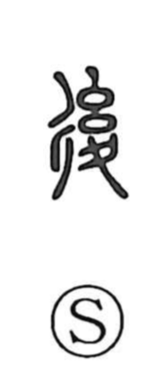

Explanation
後 combines 彳, a road, with 幺, a twisted bundle of threads used as a ritual implement, and 夊, a backward-facing footprint. 幺 also appears in an early form of 御, preserving its place among objects used in rites.
The implement is used on the road in a prayer that the enemy will retreat. The reversed foot makes the desired movement visible: going back and withdrawing. The character's spatial sense grows from this rite directed toward an opponent's movement.
From retreating come behind, the rear, and remaining at the back. Applied to time or sequence, the same position becomes afterwards, later, the last part, or a descendant. Being left behind also gives delay and lateness. The road and backward foot carry these extensions beyond the original ritual scene.